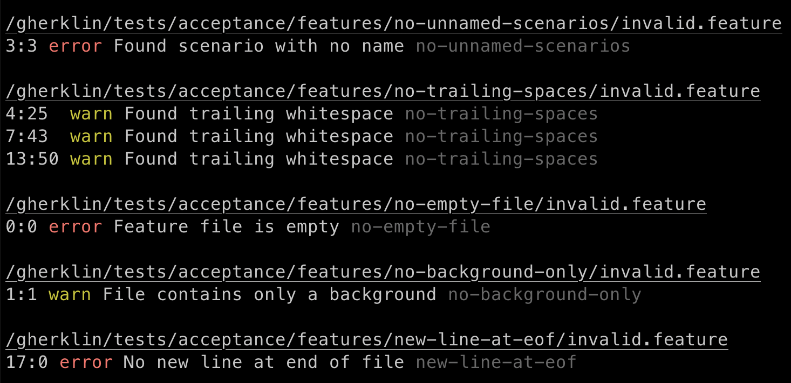
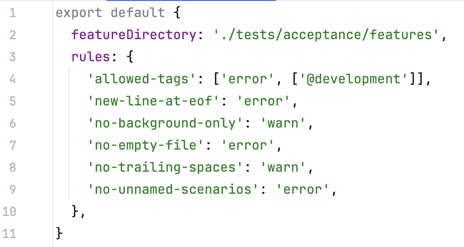
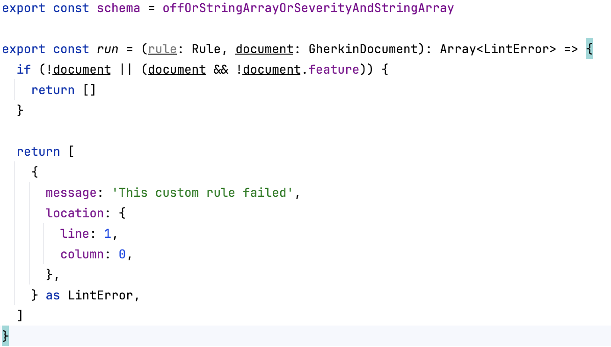

Always clean your Gherkin
Use Gherklin. The number 1 brand of Gherkin cleaner, recommended by Gherkin washers everywhere.
Get Started
Features
Enhanced Reporting
Reporting is available as either STDOUT or HTML.
See at a glance what the error was, which file it was found in, and the severity.

Customize Rules
You can customize each rule in granular detail.
Specify whether the rule is enabled or not, what severity the rule is, and any arguments if they are supported by the rule.

Custom Rules
Create your own custom rules for your project.
If Gherklin doesn't meet your specific project's needs, you can create custom rules and configure them the same way as the built-in rules.

Quick Installation
npm install gherklin
yarn add gherklin
It's that simple! Get started with Gherklin in seconds.